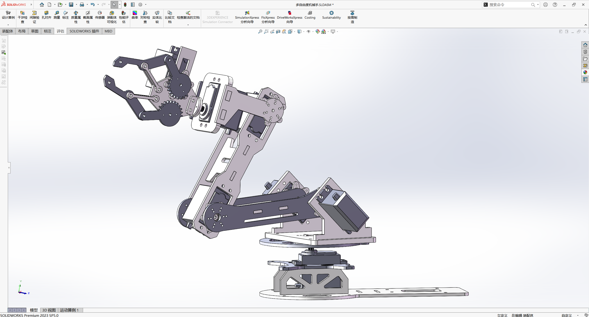

FIG. 02 / SOLIDWORKS MODEL机械装配模型截图
从基座到末端的
机构连接。
模型由基座、多段关节与连杆、末端夹爪组成。不同形态的构件通过连接部位形成完整的机械手结构，呈现各部件在装配体中的位置和关系。
建模软件SolidWorks
作品类型机械机构装配
展示重点关节 / 连杆 / 末端夹爪

模型由基座、多段关节与连杆、末端夹爪组成。不同形态的构件通过连接部位形成完整的机械手结构，呈现各部件在装配体中的位置和关系。